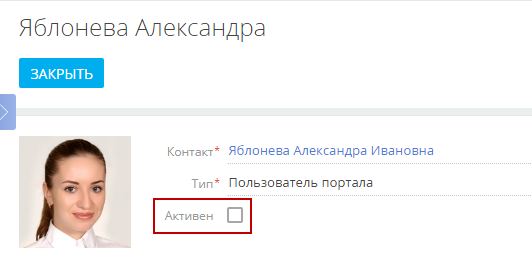
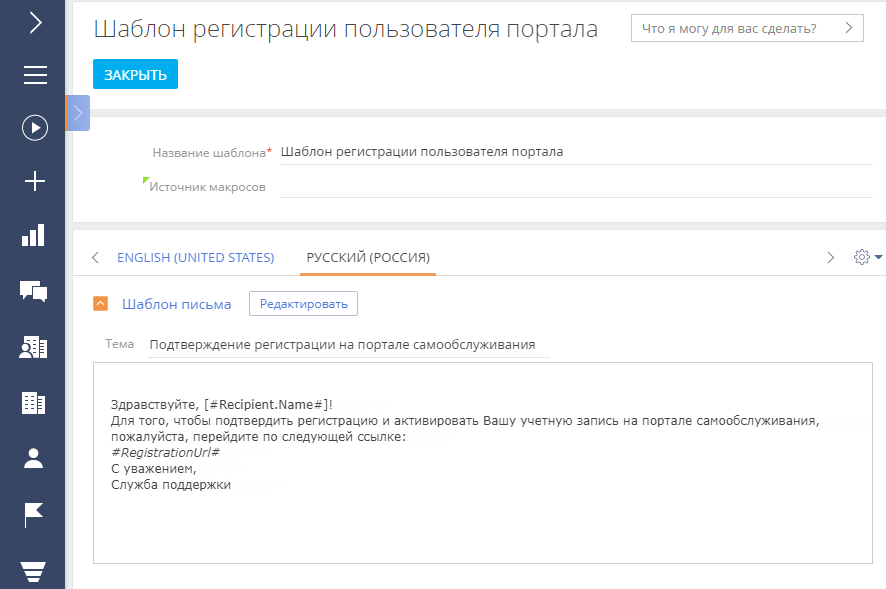
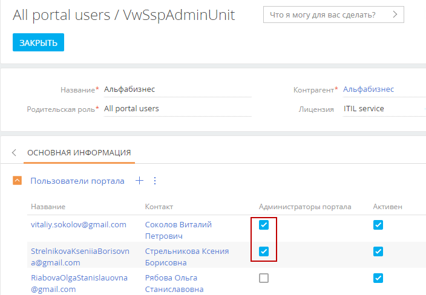

В данной статье рассмотрено управление пользователями портала и настройка прав доступа на портале администратором основного приложения Creatio.
Некоторые настройки также могут выполняться администратором портала. Подробнее: Администрирование в профиле организации на портале.
Вы можете создавать индивидуальных пользователей портала либо формировать организации — группы пользователей портала, которые привязываются к одному контрагенту. Организации позволяют управлять сотрудниками ваших клиентов, которые работают с порталом. Вы можете назначать администраторов портала среди пользователей организации. Администраторам будут доступны создание и деактивация пользователей, а также назначение прав.
Для всех пользователей портала в системе можно гибко настраивать права доступа. Вы можете настраивать права на уровне отдельных ролей или пользователей:
-
Для родительской роли “All portal users”. Все пользователи, которые входят в эту роль, получат одинаковые права.
-
Для каждого пользователя отдельно. Для разных пользователей будут настроены индивидуальные права доступа.
-
Для организации на портале. Пользователи будут наследовать права своей организации.
-
Для групп пользователей. Например, для роли “All portal users” можно создать подчиненные организационные роли и настроить для них разные права. А для организации можно создать функциональные роли с разными правами, что позволит разграничить доступ пользователей одной организации.
Рассмотрим несколько бизнес-кейсов настройки прав для пользователей портала.
- Портал для пользователей без организаций. Это наиболее простая структура. В системе создаются индивидуальные пользователи портала. Права доступа могут настраиваться для каждого пользователя отдельно, для всех пользователей (путем настройки прав родительской роли), для групп пользователей, если созданы подчиненные организационные роли. Шаги настройки:
- Создать пользователей:
- Создание индивидуальных пользователей в системе.
- Самостоятельная регистрация пользователей на портале.
- Настроить приглашения на портал.
- Настроить права доступа пользователей портала.
- Создать пользователей:
- Портал с организациями и одинаковым доступом всех пользователей. В такой структуре пользователи портала привязываются к контрагенту, т. е. группируются в организации. Для каждой организации можно настроить свои права. Пользователи наследуют права своей организации, а значит настраивать права отдельно для каждого пользователя не нужно. Шаги настройки:
- Настроить организационную структуру:
- Создание организации и пользователей в системе.
- Назначение администратора портала.
- Создание пользователей администратором на портале.
- Настроить приглашения на портал.
- Настроить права доступа пользователям портала:
- Настройка прав в системе.
- Настройка прав пользователей администратором портала.
- Настроить организационную структуру:
- Портал с организациями и разным доступом в одной организации. В этой структуре для организации можно создать функциональные роли и настроить им права. Например, можно создать функциональные роли менеджеров главного и регионального офисов и привязать пользователей организации к одной из этих функциональных ролей. Пользователи наследуют права своей функциональной роли, поэтому настраивать права отдельно для каждого пользователя не понадобится. Шаги настройки:
- Настроить организационную структуру:
- Создание организации и пользователей в системе.
- Назначение администратора портала.
- Создание пользователей администратором на портале.
- Настроить приглашения на портал.
- Настроить права доступа пользователям портала:
- Настройка прав в системе.
- Настройка прав пользователей администратором портала.
- Настроить организационную структуру:
Управление пользователями портала
Все пользователи, которые имеют доступ на портал, должны входить в группу организационных ролей “All portal users” (Все пользователи портала). Чтобы войти на портал, в системе должен существовать пользователь портала с уникальным логином и паролем. Каждый пользователь портала привязывается к контакту в системе, и для одного контакта можно создать только одного пользователя портала.
Создать пользователей портала
В основном приложении пользователей портала могут создавать системные администраторы или сотрудники с правом на системную операцию “Возможность управлять пользователями портала” (код “CanAdministratePortalUsers” ). Второй вариант подходит для случаев, когда в компании созданием пользователей портала занимается сотрудник, который не должен иметь доступа к учетным данным своих коллег — настройка выполняется непосредственно со страницы контрагента.
В системе можно создать:
-
Индивидуальных пользователей портала, без привязки к организации. В таком случае каждый пользователь создается отдельно.
-
Пользователей портала, которые входят в организацию. Данный способ позволяет массово добавлять пользователей.
Если нужно запретить вход на портал для определенных пользователей, то деактивируйте их.
Создать пользователя портала без привязки к организации
Индивидуальных пользователей портала в системе может создавать пользователь с ролью системного администратора.
Чтобы добавить пользователя портала в системе:
-
Нажмите
 → “Организационные роли” → роль “All portal users”.
→ “Организационные роли” → роль “All portal users”. -
Вкладка Пользователи → деталь Пользователи →
 → Добавить нового.
→ Добавить нового. -
Заполните страницу нового пользователя (Рис. 1). Подробнее: Добавить пользователей.
Создать пользователя портала с привязкой к организации
Чтобы привязать пользователей портала к организации, создайте в системе хотя бы одну организацию.
Все пользователи, которые будут добавлены в организацию, унаследуют настроенные для нее права. Это дает возможность настроить единожды права доступа для всей организации и не раздавать их отдельно каждому пользователю.
Создать организацию и добавить в нее пользователей можно разными способами, в зависимости от прав пользователя:
-
Пользователи с ролью системного администратора могут создать организацию со страницы организационных ролей.
-
Пользователи с правами на системную операцию “Возможность управлять пользователями портала” (код “CanAdministratePortalUsers”) могут создать организацию со страницы контрагента.
Добавить пользователей в организацию со страницы организационных ролей
-
Нажмите
→ “Организационные роли” → роль “All portal users”. -
Деталь Организации →
→ в поле Контрагент выберите контрагента, организацию которого вы хотите создать (Рис. 2). Быстро найти контрагент можно с помощью поиска по его названию.После указания контрагента поле Название заполняется автоматически, при желании его можно изменить.
-
Сохраните страницу. На детали Организации нажмите на название организации. Откроется ее страница.
-
Если контакт уже создан в системе, то на детали Пользователи портала нажмите
Система ищет контакты с указанными email-адресами и в случае, если не находит, то автоматически создает новые контакты. ФИО пользователя при этом заполняется текстом email-а до знака “@”. и выберите Добавить существующие контакты. Во всплывающем окне выберите один или несколько контактов (Рис. 3).
Если контакт еще не создан в системе, то нажмите и выберите Добавить новые контакты. Введите один или несколько email-адресов новых пользователей портала через пробел или запятую. При вводе электронных адресов выполняется стандартная проверка на их корректность. Нажмите кнопку Зарегистрировать пользователей. -
Система предложит отправить приглашения на портал новым пользователям. Вы можете подтвердить отправку по кнопке Отправить приглашения или закрыть окно и отправить приглашения пользователям позже.
В результате пользователи портала будут добавлены в организацию и унаследуют настроенные для нее права.
Вы можете перейти к управлению параметрами пользователя портала (логин, пароль, роли и лицензии), дважды кликнув по нужной строке на детали Пользователи портала.
Для перехода у вас должны быть настроены права доступа на выполнение системной операции “Возможность управлять пользователями портала” (код “CanAdministratePortalUsers“) или “Управление списком пользователей” (код “CanManageUsers“). Подробнее: Настроить права доступа на системные операции.
В Creatio будет создана новая учетная запись с актуальными правами доступа, а предыдущая учетная запись пользователя деактивируется во избежание дублирования.
Добавить пользователей в организацию со страницы контрагента
Используйте этот способ в следующих случаях:
- Если отсутствует доступ к разделу Пользователи системы.
- Если пользователь портала сменил работодателя, вы можете добавить существующий контакт в новую организацию.
-
Откройте страницу контрагента → вкладка Контакты и структура → деталь Пользователи портала.
-
Нажмите кнопку Создать организацию. Кнопка отображается, только если для этого контрагента еще не существует организации.
-
В поле Родительская роль выберите роль “All portal users” (Рис. 4).
- Сохраните изменения. В результате организация будет зарегистрирована и доступна на странице организационной роли “All portal users”, а кнопка Создать организацию пропадет со страницы контрагента.
- Если контакт уже создан в системе, то на детали Пользователи портала нажмите и выберите Добавить существующие контакты. Во всплывающем окне выберите один или несколько контактов (Рис. 5).
Если контакт еще не создан в системе, то на детали Пользователи портала нажмите
и выберите Добавить новые контакты. Введите email-адреса новых пользователей портала и нажмите кнопку Зарегистрировать пользователей. -
Система предложит отправить приглашения на портал новым пользователям. Можно подтвердить отправку сразу (кнопка Отправить приглашения), а можно закрыть окно и отправить приглашения пользователям позже.

В результате пользователи портала будут добавлены в организацию и унаследуют настроенные для нее права. Если вы добавляли существующего пользователя в новую организацию, то предыдущая учетная запись пользователя деактивируется во избежание дублирования.
Вы можете перейти к управлению параметрами пользователя портала (логин, пароль, роли и лицензии), дважды кликнув по нужной строке на детали Пользователи портала.
Администратор портала также может добавлять новых пользователей своей организации.
Деактивировать пользователей
Если пользователь больше не должен иметь доступ к порталу, то администратор системы может его деактивировать.
Деактивировать пользователя со страницы пользователя
-
Нажмите
 → “Пользователи системы”. Откройте страницу пользователя, которого необходимо деактивировать.
→ “Пользователи системы”. Откройте страницу пользователя, которого необходимо деактивировать. -
Снимите признак Активен и сохраните изменения (Рис. 6).
Рис. 6 — Создать пользователя портала без привязки к организации
Деактивировать пользователя со страницы организации
-
Нажмите
→ “Организационные роли” → роль “All portal users”. -
На детали Организации нажмите на название организации. Найдите пользователя, которого необходимо деактивировать.
-
Снимите признак Активен и сохраните изменения (Рис. 7).
В результате пользователь будет деактивирован, но не будет удален. При необходимости его можно будет снова активировать.
Отправить приглашения на портал
Чтобы новый пользователь смог войти на портал, ему нужно отправить приглашение. Приглашение высылается на email, указанный на странице контакта. Текст письма можно настроить, указав адрес вашего портала и любую другую необходимую информацию.
Для отправки приглашений на портал в системе должна быть настроена почта. Подробнее: Настройка базовых интеграций.
Для отправки сообщений необходимо выполнить предварительные настройки:
-
Настройте почтовый адрес для отправки приглашений пользователям и восстановления пароля на портале. Адрес указывается в системной настройке “Почтовый ящик регистрации на портале” ( код “SSPRegistrationMailbox”).
-
Убедитесь, что для пользователей указаны языки. Если нет, то пользователь получит приглашение на языке по умолчанию (английский). Приглашения отправляются на языке, который указан на странице пользователя в поле Культура.
-
Настройте текст письма. Для этого настройте шаблон приглашения на портал:
Откройте → “Справочники” → справочник Шаблоны email сообщений → мультиязычный шаблон “Шаблон регистрации пользователя портала” (Рис. 8). Вы можете отредактировать данный шаблон, настроив желаемый внешний вид и сформировав шаблоны на всех нужных языках.Рис. 8 — Шаблон регистрации пользователя портала
Вы можете отправить приглашение сразу при создании пользователя, подтвердив отправку по кнопке Отправить приглашения.
Чтобы отправить (или повторно отправить) приглашения выбранным пользователям в любой момент:
- На детали Пользователи портала выделите одного или нескольких пользователей, которым нужно отправить приглашения.
- Нажмите
 и выберите опцию Отправить приглашения (Рис. 9).
и выберите опцию Отправить приглашения (Рис. 9).
Если пользователь при переходе из приглашения на портал не ввел пароль, а сразу начал работу с порталом, то пароль будет создан автоматически. Повторный переход из приглашения на портал не сработает. В таком случае по запросу пользователя администратор может выслать ему приглашение повторно.
При переходе из приглашения на портал пользователь попадет на страницу, где нужно будет создать и ввести пароль, который он будет использовать для входа (Рис. 10).
Настроить самостоятельную регистрацию пользователей портала
Самостоятельная регистрация пользователей портала поможет сэкономить время и облегчит работу администраторов приложения и портала. Для того чтобы пользователи могли самостоятельно регистрироваться со страницы входа на портал, нужно выполнить ряд настроек.
Обязательные настройки:
-
Убедитесь, что в приложении существует системный пользователь портала с максимально ограниченными правами доступа.
-
Настройте лицензирование пользователей портала при самостоятельной регистрации.
-
Настройте отправку уведомлений о регистрации пользователя портала и восстановлении пароля.
Опциональные настройки:
- Отредактируйте шаблоны email-сообщений о регистрации на портале и восстановлении пароля.
Создать системного пользователя портала
Для корректной работы самостоятельной регистрации пользователей портала, восстановления пароля и сбора обратной связи по обращениям используется учетная запись пользователя, для которого максимально ограничены права доступа. По умолчанию таким пользователем является SysPortalConnection. Этого пользователя нельзя удалять и изменять для него права доступа и лицензии, иначе возможность регистрации пользователей на портале может быть недоступна.
При возникновении каких-либо проблем в самостоятельной регистрации проверьте настройки системного пользователя:
-
Нажмите
→ “Пользователи системы”, найдите запись системного пользователя портала. -
Откройте страницу системного пользователя SysPortalConnection → на вкладке Лицензии должна быть указана лицензия портала.
-
Убедитесь, что системный пользователь портала связан с существующим контактом (поле Контакт).
Если вы хотите изменить учетную запись системного пользователя портала, то выполните следующие действия:
-
Создайте пользователя в разделе управления ролями и пользователями. Нажмите
→ Пользователи системы → Добавить → Пользователя портала. Не используйте пользователя “Supervisor” или реального пользователя, который должен работать в системе. -
Выдайте ему лицензию портала на вкладке Лицензии.
-
Настройте для нового пользователя максимально ограниченные права доступа в разделе Права доступа на объекты.
-
Укажите нового пользователя в настройках приложения:
-
Для Creatio on-site: укажите нового системного пользователя в файле web.config. Подробнее: Настроить лицензирование пользователей портала при самостоятельной регистрации.
-
Для Creatio cloud: обратитесь в службу технической поддержки и предоставьте данные нового системного пользователя.
-
Настроить лицензирование пользователей портала при самостоятельной регистрации
Чтобы пользователи портала при самостоятельной регистрации автоматически получали лицензию портала, необходимо выполнить настройку:
-
Нажмите
→ “Пользователи системы”. -
Откройте страницу системного пользователя портала. В базовой конфигурации это SysPortalConnection.
-
На вкладке Лицензии установите признак напротив лицензии портала (Рис. 11).
В менеджере лицензий проверьте наличие свободных лицензий для пользователей портала, которые будут регистрироваться самостоятельно. Лицензии будут присваиваться автоматически. Подробнее: Лицензировать Creatio.
Для приложений, развернутых on-site, кроме перечисленных выше действий, необходимо выполнить дополнительные настройки, отредактировав файл Web.config, размещенный в корневой директории приложения Creatio:
- В параметре SspUserRegistrationLicPackage укажите имя продукта, лицензии которого будут раздаваться при создании пользователя портала. Например:
- Рекомендуем убедиться, что параметры UserManagementSauName и UserManagementSauPassword содержат логин и пароль системного пользователя для входа на страницу регистрации на портале. Новые пользователи портала получат права указанного в файле конфигурации пользователя.
Настроить отправку уведомлений пользователям портала
Чтобы пользователи могли получить приглашение на портал или письмо с подтверждением регистрации, в системе должен быть настроен почтовый ящик для отправки уведомлений портала. Для выполнения данной настройки вам необходима учетная запись почты, синхронизированная с приложением. Подробнее: Настройка базовых интеграций.
Чтобы настроить отправку уведомлений портала:
Нажмите → “Системные настройки”.
-
Откройте системную настройку “Почтовый ящик регистрации на портале” (код “SSPRegistrationMailbox”).
-
В поле Значение по умолчанию укажите почтовый адрес, с которого пользователям портала будут отправляться уведомления.
У вас может возникнуть необходимость отредактировать тексты писем, которые будут получать пользователи при регистрации и восстановлении пароля, или создать новые шаблоны. Это можно сделать в справочнике Шаблоны email-сообщений. По умолчанию в системе используются следующие шаблоны для отправки пользователям портала:
-
“SSP invite template (US)” — приглашение зарегистрироваться на портале;
-
“Шаблон регистрации пользователя портала” — подтверждение регистрации на портале;
-
“Link for password recovery” — ссылка для восстановления пароля пользователя на портале.
Подробнее: Создать шаблон письма.
Система определяет, какой шаблон будет отправлен пользователю, по системным настройкам:
-
“Шаблон приглашения на портал самообслуживания” (код “PortalInvitationEmailTemplate”).
-
“Шаблон email-сообщения, подтверждающего регистрацию пользователя на портале” (код “PortalRegistrationEmailTemplate”).
-
“Шаблон email-сообщения для восстановления пароля пользователя на портале” (код “PortalRecoveryPasswordEmailTemplate”).
Чтобы перейти к редактированию этих настроек, нажмите → “Системные настройки”.
Настроить восстановление пароля
Если пользователь не может войти на портал, то ему необходимо обратиться к администратору системы для получения повторного приглашения или воспользоваться функцией восстановления пароля (Рис. 12).
Пользователь может нажать Забыли пароль, после чего получит письмо со ссылкой для восстановления согласно настроенному в системе шаблону.
Чтобы настроить шаблон письма для восстановления пароля на портале:
-
Нажмите
→ “Справочники” → справочник Шаблоны email сообщений → шаблон “Link for password recovery”. -
Внесите необходимые изменения в шаблон и сохраните их.
Шаблон обязательно должен содержать макрос #RecoveryLinkUrl#, который является ссылкой для восстановления пароля учетной записи пользователя портала.
Назначить администратора портала
Для организации на портале вы можете не только создать пользователей, но и назначить одного или нескольких администраторов портала.
Администраторы портала имеют ряд дополнительных возможностей в сравнении с обычными пользователями:
-
Управление основной информацией об организации. На странице профиля организации доступны название и телефон организации, а также список пользователей портала.
-
Создание пользователей.
-
Отправка пользователям приглашений.
-
Настройка доступа пользователей.
-
Просмотр и редактирование информации обслуживания.
Подробнее: Администрирование в профиле организации на портале.
Чтобы назначить пользователя администратором организации на портале:
-
В основном приложени нажмите
→ “Организационные роли” → роль “All portal users”. -
На детали Организации нажмите на название организации. Найдите пользователя или нескольких пользователей, которых нужно назначить администраторами.
-
Отметьте для них признак Администраторы портала (Рис. 13).
Рис. 13 — Назначение администраторов организации на портале
Назначенные вами администраторы смогут в дальнейшем самостоятельно назначить администраторами других пользователей.
Управление правами доступа на портале
Поскольку на портале внешние пользователи работают с данными основного приложения Creatio, настройка прав доступа является задачей первостепенной важности. Вы можете управлять доступом внешних пользователей к вашим бизнес-данным на портале и контролировать сохранность и конфиденциальность важной информации.
Права доступа в Creatio распределяются по принципу “наименьшего доступа”. Это значит, что пользователям портала запрещено все, на что не дано непосредственного разрешения.
В целом управление правами доступа пользователей портала аналогично управлению правами доступа пользователей основного приложения и реализуется через те же инструменты. Подробнее: Назначить пользователю роли.
Управление доступом на портале имеет следующие особенности:
-
Пользователи портала — это отдельный тип пользователей системы, которые входят в организационную роль “All portal users” (Все пользователи портала).
-
Управление доступом пользователей портала к данным системы осуществляется не только через права доступа, но и через справочник Список объектов, доступных пользователям портала. Только те объекты, которые перечислены в справочнике, будут доступны из интерфейса портала.
Обратите внимание, что список разделов, доступных пользователям портала, зависит также от конфигурации портала. Например, раздел Обращения портала недоступен на клиентском портале. Подробнее: О портале Creatio.
Когда пользователь портала пытается получить доступ к определенным данным, система выполняет проверку прав в следующем порядке:
-
Доступность данных на портале, то есть, упомянут ли объект, содержащий запрошенные данные, в справочнике Список объектов, доступных пользователям портала. Если нет, то пользователь данных не увидит, независимо от прочих настроек доступа.
-
Доступ к объекту по операциям. У пользователя есть права на создание, чтение, изменение и удаление данных объекта? Если нет, то пользователь данных не увидит, независимо от прочих настроек доступа.
-
Доступ к записям. У пользователя есть права доступа к записи объекта, которая содержит запрошенные данные? Если доступ к записи запрещен (например, ограничены права на чтение и редактирование некоторых обращений или статей базы знаний), то пользователь этих данных не увидит, независимо от прочих настроек доступа.
-
Доступ к колонкам. У пользователя есть права доступа к колонке объекта, которая содержит запрошенные данные? Если доступ к колонке запрещен (например, ограничены права на чтение и редактирование ответственных по обращениям, авторов статей базы знаний и т. д.), то пользователь этих данных не увидит, независимо от прочих настроек доступа.
Каждый из перечисленных этапов проверки представляет отдельную настройку прав доступа, которую вы можете выполнить для пользователей портала.
Права доступа к объекту по операциям позволяют предоставить доступ на создание, чтение, редактирование и удаление данных объекта. Например, вы можете предоставить пользователям портала возможность создавать новые статьи в разделе База знаний портала, настроив соответствующие права доступа для этого объекта.
Подробнее: Настроить доступ по операциям.
Права доступа к записям позволяют настраивать доступ пользователям портала к отдельным записям: обращениям, статьям базы знаний и т. п. Например, пользователи должны видеть на портале не только обращения, которые создали сами, но также инциденты, зарегистрированные их коллегами, которые входят в ту же организацию портала.
Обратите внимание, что, если вы не выполните отдельную настройку, то пользователи портала увидят только те записи, которые создали сами. Есть несколько способов настройки прав доступа:
-
Настроить права доступа по умолчанию, которые будут применяться к каждой новой записи в разделе, в зависимости от ее автора.
-
Раздать права доступа на запись другим пользователям портала через меню действий на странице записи.
-
Использовать бизнес-процесс для перераспределения прав доступа.
Подробнее: Настроить доступ по записям.
Доступ по колонкам определяет права на определенные поля записи, например, поле “Уровень удовлетворенности” на странице обращения. Настройка доступа по колонкам определяет:
-
Будет ли соответствующее поле отображаться на странице записи.
-
Будет ли соответствующая колонка отображаться в реестре раздела.
Подробнее: Настроить права доступа на колонки.
Вы можете настраивать права доступа по колонкам отдельно для каждого пользователя портала или для определенной роли, например, “All portal users”.
Права доступа пользователей портала по умолчанию
По умолчанию все пользователи портала обладают следующими правами доступа:
-
Право на чтение всех статей раздела База знаний портала. При создании новых статей базы знаний в основном приложении пользователям портала автоматически предоставляется право на их чтение.
-
Право на чтение главной страницы портала.
-
Право изменить пароль на странице профиля пользователя.
-
Право на чтение при использовании области групп в разделах портала.
-
Право оставлять комментарии в ленте, а также изменять и удалять их. Право отмечать понравившиеся комментарии других пользователей.
-
Право создавать записи в разделе Обращения портала на портале самообслуживания в продуктах линейки Service Creatio. Для пользователя отображаются только те записи, автором которых он является.
Точно так же, как для пользователей основного приложения, для пользователей портала можно настраивать права доступа к объектам и к системным операциям.
-
Права доступа к объектам позволяют настраивать доступ к разделам, деталям и справочникам, а также отдельным записям и колонкам.
-
Права доступа к операциям позволяют управлять доступом пользователей портала к выполнению специфических действий, например, экспорта данных в Excel.
Права доступа на сервисные объекты
На портале самообслуживания в продуктах линейки Service Creatio пользователям и организациям могут автоматически предоставляться права на чтение обращений, сервисных договоров и конфигурационных единиц.
Обращения
Если включена системная настройка “Раздавать права на обращение организации портального пользователя” (код “GrantCasePermissionsForPortalOrganization”), то права на просмотр обращения предоставляются не только автору, но и всем пользователям организации портала, в которую он входит. Это позволяет пользователям портала отслеживать статус по инцидентам, созданным коллегами.
Сервисные договоры и конфигурационные единицы
Если включена системная настройка “Включение прав на сервисные договоры и конфигурационные единицы для пользователей портала” (код “EnableRightsOnServiceObjects”), то права на просмотр необходимых сервисных договоров и конфигурационных единиц автоматически предоставляются пользователям и организациям портала.
Обратите внимание, предварительно необходимо настроить доступ по записям для объекта “Сервисный договор” таким образом, чтобы пользователи портала получали доступ только к актуальным для них сервисным договорам. Подробнее: Настроить доступ по записям.
Право на просмотр сервисного договора предоставляется:
- Пользователю, контакт которого указан на детали Объекты обслуживания данной записи.
- Всем пользователям, входящим в организацию портала, указанную на детали Объекты обслуживания данной записи.
Право на просмотр конфигурационной единицы предоставляется:
- Пользователю, контакт которого указан на детали Пользователи данной записи.
- Всем пользователям, входящим в организацию портала, указанную на детали Пользователи данной записи.
Настроить организационную структуру портала
Аналогично пользователям основного приложения Creatio, пользователей портала можно группировать, назначая им определенные организационные и функциональные роли. Если вы настраиваете права доступа для роли, то они будут применены для всех пользователей, которые входят в эту роль.
По умолчанию все пользователи портала входят в корневую роль “All portal users” (Все пользователи портала). Права доступа, которые вы настроите для этой роли, будут применены ко всем пользователям портала.
Вы можете сегментировать пользователей портала, настроив для “All portal users” подчиненные роли. Эти роли автоматически унаследуют права доступа, настроенные для родительской. Вы также можете настроить дополнительные права и ограничения для каждой из подчиненных ролей. Например, права пользователей портала могут зависеть от их местонахождения.
Организации портала — это специальный тип роли для пользователей портала. Они используются для управления учетными записями сотрудников ваших клиентов. Вы можете связать организации портала с существующими в системе записями контрагентов.
Настройте организационную структуру для портала, чтобы облегчить управление правами доступа пользователей в соответствии с вашими бизнес-задачами.
Добавить роль пользователю портала
Вы можете добавить роли для пользователей портала точно так же, как и для пользователей основного приложения. Подробнее: Организационные роли.
Например, вы можете создать организационную роль “Минск” для управления доступом к данным пользователей из Минска (Рис. 14), убедившись, что созданная вами организационная роль является подчиненной для корневой роли “All portal users”.
В результате все пользователи портала, которые входят в организационную роль “Минск”, унаследуют права доступа, настроенные для роли “All portal users”. Вы можете дополнительно настроить специфические права доступа только для пользователей, входящих в роль “Минск”.
Назначить роль пользователю портала
Назначение ролей для пользователей портала выполняется аналогично назначению ролей для пользователей основного приложения. Подробнее: Назначить пользователю роли.
Например, вы можете назначить пользователю портала организационную роль “Минск” (Рис. 15). Обратите внимание, что для пользователей портала вы можете назначать только роли, для которых родительской является “All portal users”.
В результате все пользователи портала, которые входят в организационную роль “Минск”, унаследуют права доступа, настроенные для ролей “All portal users” и “Минск”.
Настроить права доступа для пользователей портала
Управление доступом к данным в системе — это управление правами доступа на объекты. Подробнее: Настроить доступ по операциям.
Несмотря на то, что вы можете назначать права доступа конкретным пользователям портала, оптимальнее настраивать права доступа на уровне ролей:
-
Назначить общие права для роли “All portal users” (Все пользователи портала).
-
Создать подчиненные организационные роли для роли “All portal users”, чтобы разграничить права для разных групп пользователей портала.
-
Связать роли с учетными записями клиентов — для управления сотрудниками ваших клиентов.
Права доступа на объекты можно ограничить на трех уровнях:
-
Права доступа по операциям — права на чтение, создание, редактирование и удаление данных объекта.
-
Права доступа по записям — права на чтение, редактирование и удаление отдельных записей выбранного объекта.
-
Права доступа по колонкам — права на чтение, редактирование и удаление данных в отдельных колонках.
Настроить доступ по операциям на портале
Вы можете управлять доступом к разделу, детали или справочнику на портале, настраивая пользователям портала права доступа на объекты по операциям. Настройка прав для пользователей портала осуществляется так же, как и для обычных пользователей. Подробнее: Настроить доступ по операциям.
Например, можно настроить разные права доступа к разделу База знаний портала для пользователей портала из Минска и Астаны (Рис. 16).
В результате пользователи портала с ролью “Астана” смогут создавать новые статьи в разделе База знаний портала, просматривать и редактировать существующие, но не смогут удалять их. Пользователи портала с ролью “Минск” смогут только видеть статьи базы знаний, но не смогут их создавать, редактировать или удалять.
Настроить доступ по записям на портале
Вы можете управлять доступом пользователей портала к определенным записям в разделах портала, деталях и справочниках. Если вы включите доступ по записям в объекте, то все записи объекта станут недоступными для пользователей портала, если только для каждой конкретной записи не настроен доступ отдельно.
Распределение прав зависит от автора записи, на которую вы настраиваете доступ. Настройка прав для пользователей портала выполняется так же, как и для обычных пользователей. Подробнее: Настроить доступ по записям.
Например, вы можете назначить права на статьи базы знаний, созданные пользователями портала в Минске (Рис. 17).
В результате пользователи портала, которые входят в организационную роль “Астана”, смогут читать статьи, созданные пользователями из организационной роли “Минск”.
Настроить доступ по колонкам на портале
Вы можете управлять доступом пользователей портала к определенным колонкам в разделах, на деталях и в справочниках, настроив права для нужного пользователя или роли портала. Настройка прав для пользователей портала такая же, как и для обычных пользователей. Подробнее: Настроить права доступа по колонкам.
Например, можно скрыть поле Дата изменения и ограничить пользователям портала доступ на чтение и редактирование даты изменения статей базы знаний (Рис. 18).
В результате пользователи в организационной группе “Астана” не смогут видеть поле Дата изменения на страницах статей базы знаний.